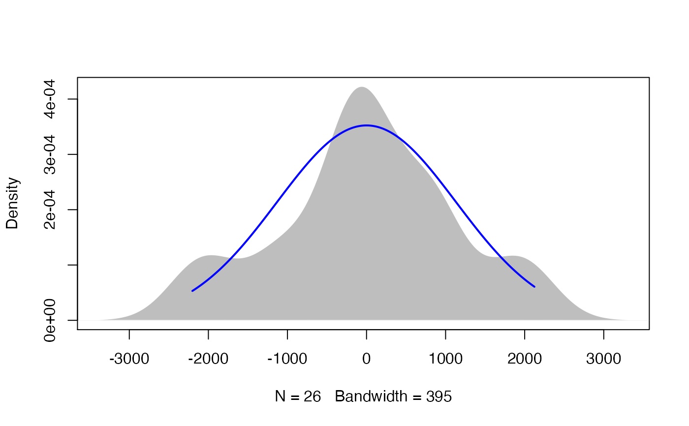

plotNormalDensity.RdProduces a density plot for a vector of values and adds a normal curve with the same mean and standard deviation. The plot can be used to quickly compare the distribution of data to a normal distribution.
plotNormalDensity( x, col1 = "white", col2 = "gray", col3 = "blue", border = NA, main = "", lwd = 2, length = 1000, adjust = 1, bw = "nrd0", kernel = "gaussian", ... )
| x | A vector of values. |
|---|---|
| col1 | The color of the density plot. Usually not visible. |
| col2 | The color of the density polygon. |
| col3 | The color of the normal line. |
| border | The color of the border around the density polygon. |
| main | The title displayed for the plot. |
| lwd | The width of the line in the plot. |
| length | The number of points in the line in the plot. |
| adjust | Passed to |
| bw | Passed to |
| kernel | Passed to |
| ... | Other arguments passed to |
Produces a plot. Returns nothing.
The function plots a polygon based on the density function.
The normal curve has the same mean and standard deviation as the
values in the vector.
http://rcompanion.org/handbook/I_01.html
### Plot of residuals from a model fit with lm data(Catbus) model = lm(Steps ~ Sex + Teacher, data = Catbus) plotNormalDensity(residuals(model))